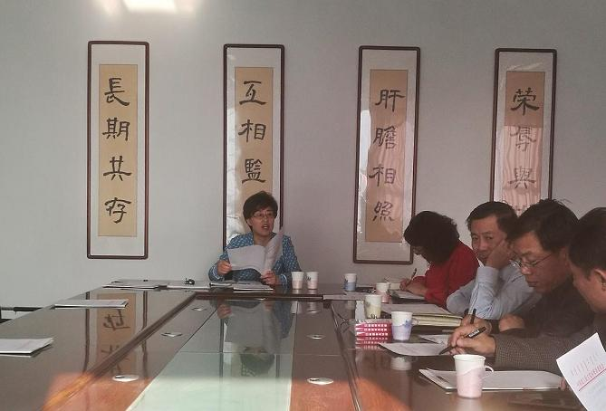

10月21日，农工党赤峰市委主委、市政府副市长李艳茹主持召开农工党赤峰市委第十一次全委会议。

会议传达了《农工党内蒙古自治区委员会关于开展基层组织创优工作实施方案（草案）》和《关于做好2019年<前进论坛>征订工作的通知》，通报了2018年重点课题调研工作开展情况、各支部社情民意信息报送情况，商讨了《健康扶贫讲座》光盘发放事宜，安排部署了近期重点工作。
李艳茹强调，2018年工作已经进入最后冲刺阶段，各支部要按照年初工作计划查缺补漏，保证工作成效。要充分履行参政议政职能，积极围绕健康扶贫、移风易俗、农村养老问题等社会热点难点问题建言献策，为党委政府科学决策提供有力参考。要全面加强自身建设，按照习近平总书记对党派工作“四新”“三好”要求，以农工党区委开展的“不忘合作初心，继续携手前进”主题教育活动为契机，加强理论学习，提高政治素养，积极适应新时代新要求，努力为经济社会发展贡献力量。